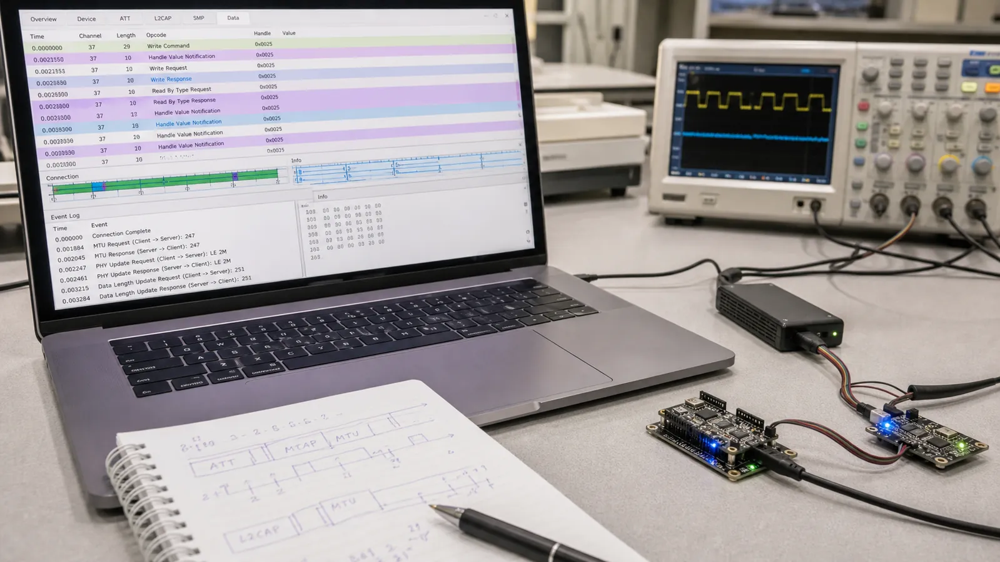

ATT زبان پایه دسترسی به داده در BLE است. سرور یک جدول مرتب از Attributeها دارد و کلاینت با Handle آنها را میخواند یا مینویسد. GATT ظاهر سطح بالاتر همین جدول است.
هر Attribute یک Handle یکتا در همان اتصال، یک Type یا UUID، سطح دسترسی و Value دارد. Handle عددی 16 بیتی است و جای Attribute را در جدول مشخص میکند. Handle بین نسخههای Firmware تضمین ثابت ندارد؛ کلاینت حرفهای سرویس را Discover میکند و عدد را حدس نمیزند.
Read Request یک Handle را میفرستد و سرور Read Response برمیگرداند. Write Request پاسخ موفقیت یا خطا دارد، اما Write Command یا Write Without Response برای سرعت بیشتر پاسخ ATT نمیخواهد. انتخاب عملیات باید بر اساس اهمیت تأیید، نرخ داده و تحمل از دسترفتن باشد.
اگر Handle وجود نداشته باشد، مجوز کافی نباشد یا طول نامعتبر باشد، سرور Error Response شامل Opcode درخواست، Handle و Error Code میفرستد. ثبت این سه مقدار معمولاً سریعتر از حدسزدن علت خطا است. خطای امنیتی را با Pairing اشتباه نگیرید؛ ممکن است Characteristic به Encryption نیاز داشته باشد.
ATT MTU بیشترین اندازه PDU در ATT است. مقدار پیشفرض کوچک است و دو طرف میتوانند مقدار بزرگتر را مذاکره کنند. Payload مفید هر عملیات چند بایت کمتر از MTU است، چون Opcode و Handle نیز فضا میگیرند. افزایش MTU بدون Data Length و بافر کافی همیشه Throughput را بالا نمیبرد.
یک Read ساده در ابزار موبایل انجام دهید. در Capture ابتدا ATT Read Request را پیدا کنید، Handle را یادداشت کنید و سپس Read Response را باز کنید. بعد MTU Exchange را پیدا و اندازه توافقشده را با طول واقعی بستهها مقایسه کنید.